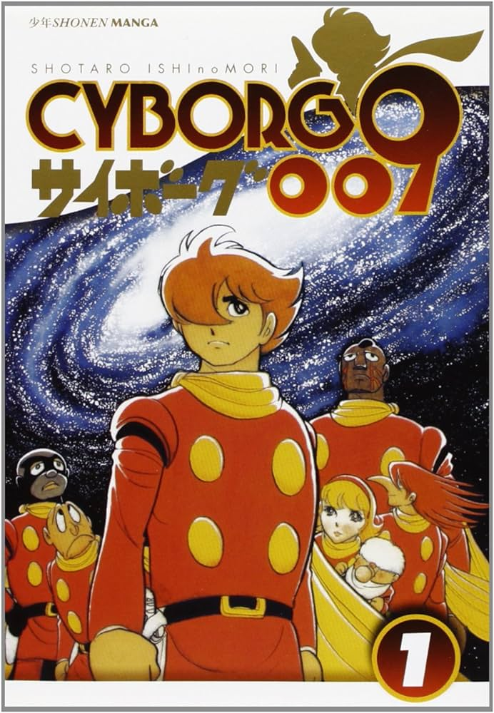
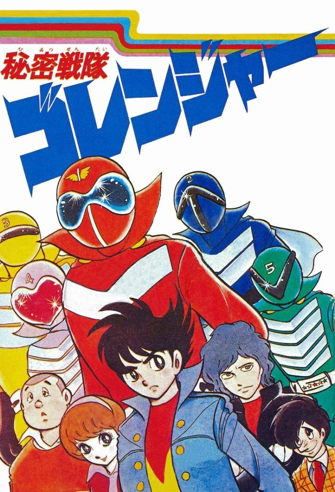
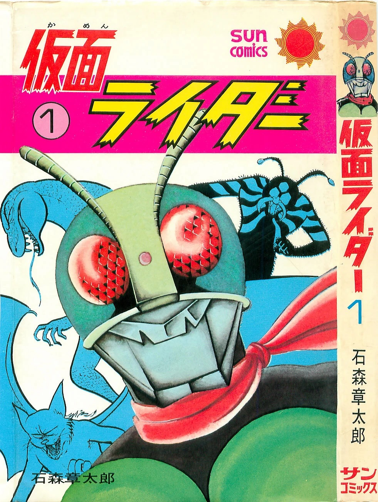
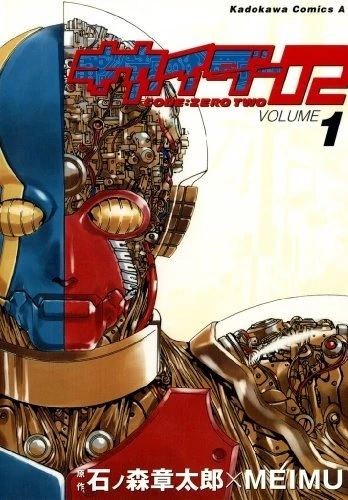
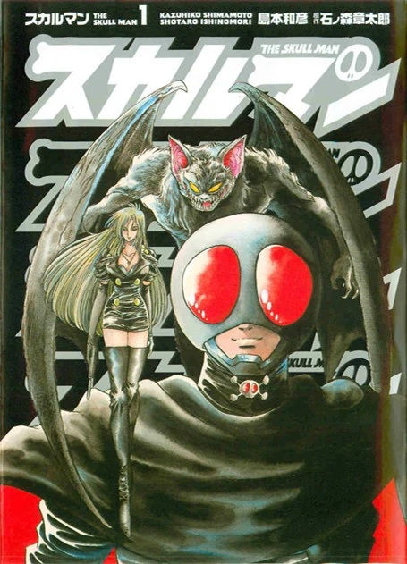

Fué una figura influyente en el manga, anime y tokusatsu con la creación de varias series populares de larga duración como Cyborg 009, Kamen Rider y Super Sentai Series. El nombre real de Ishinomori era Shōtarō Onodera (小野寺章太郎), y era también conocido como Shōtarō Ishimori (石森章太郎) hasta que en 1986 cambió su apellido a Ishinomori.
El arte de Ishinomori evoca en cierta medida al de su mentor Osamu Tezuka. La verdadera historia de su primer encuentro con Tezuka fue ilustrada en un material suplementario de cuatro páginas como cuento dibujado en la reimpresión de los años 1970 de la serie manga Astro Boy. En 1954, Ishinomori presentó su primer trabajo oficial, Nikyu Tenshi, para un concurso de nuevos talentos en la revista Manga Shōnen. Tezuka quedó impresionado con sus dibujos y le preguntó a Ishinomori si podía ayudarlo con Astro Boy. Luego de terminar secundaria en 1956, Ishinomori se mudó al mítico edificio Tokiwa-sō con Tezuka, y vivieron juntos hasta 1961. Cyborg 009, creada en 1963, fue la primera serie que mostraba un equipo de héroes con super poderes creada en Japón. El mismo año, Kazumasa Hirai y Jiro Kuwata crearon el primer superhéroe japonés cyborg, 8 Man (que precedió a Kikaider por nueve años).
El éxito de la serie de televisión Kamen Rider, producida por Toei Company Ltd. en 1971, llevó al nacimiento del superhéroe "henshin" (transformación) (superhéroes de tamaño humano que podían transformarse haciendo una pose, y utilizaban artes marciales para luchar contra los monstruos enemigos), dando como resultado varias secuelas que continúan hoy día. Ishinomori entonces creó varios dramas similares de superhéroes, casi todos producidos por Toei, incluyendo Android Kikaider , Henshin Ninja Arashi, Inazuman, Robotto Keiji, Himitsu Sentai Goranger (la primera serie de la franquicia Super Sentai Series), Kaiketsu Zubat, y otros tantos. Incluso creó varios programas infantil populares en Japón como lo fue Hoshi no Ko Chobin en 1974, el cual incluso tuvo éxito en la televisión italiana, y Good Luck, Robocon!.
Fuera del género Super Sentai, Ishinomori también demostró una gran versatilidad temática, apuntando a todos los públicos. Sus manga más conocidos como Sabu and Ichi, Genma Wars y 009-1 han sido adaptadas a otros formatos como televisión, cine, literatura, radionovelas y videojuegos. En 1992, ilustró una versión cómic del juego de Super Nintendo The Legend of Zelda: A Link to the Past, para la revista americana Nintendo Power. En 1997, un ya enfermo Ishinomori contactó a su "sucesor" Kazuhiko Shimamoto para hacer una continuación de Skull Man (1970). Posteriormente Shimamoto se encargaría de revivir otras obras clásicas de su maestro.
Autor de los siguientes mangas tan influeyentes en el género, entre otros:
Cyborg 009
Himitsu
Sentai Goranger
Kamen Rider
Kikaider 02
Skull Man
Los más exitosos han tenido su adaptación a la tv en live action.
Kamen Rider (1971)
Himitsu Sentai Goranger (1975)
Kikaider (1972)
Falleció de un ataque cardíaco el 28 de enero de 1998, sólo tres días después de su cumpleaños 60. Su último trabajo fue la serie tokusatsu Voicelugger, estrenada un año más tarde. Dos años después de su muerte, la franquicia Kamen Rider sería resucitada en formato de serie de televisión con la temporada Kamen Rider Kuuga emitiéndose ininterrumpidamente una temporada nueva desde ese momento hasta el día de hoy. Todas las temporadas de Kamen Rider y Super Sentai producidas durante la Era Heisei posteriores a su muerte y actualmente en la Era Reiwa lo tendrían a él acreditado como su creador. El Ishinomori Manga Museum fundado en su honor abrió sus puertas en Ishinomaki, Miyagi en 2001. Póstumamente, ganó el Guinness World Record por ser el artista más productivo en la historia del cómic, totalizando más de 128,000 páginas en 770 títulos a través de 500 volúmenes.